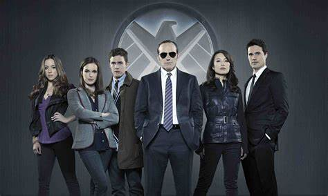

Agents of Shield Season 1
Agents of Shield is Marvel's 2013 show that originally aired on ABC. It was set in the Marvel Cinematic Universe diving into the lives of ordinary agents working under the shadow of extrondinary events. With actors from previous films reprising their roles, such as Clark Gregg starring as Phillip J. Coulson. And new characters being introduced to the MCU such as Melinda May (played by Ming-Na Wen), Daisy Johnson (played by Chloe Bennet), Jemma Simmons (by Elizabeth Henstridge), and Leopold Fitz (by Iain De Caestecker). In this show they are "the line between the world and the much weirder world." Meaning they protect people from supernatural occurrences including, superhuman soldiers and an alien virus that kills people in a very unusual way. As the first season continues, there seems to be connections between some of the obstacles they faced early on all adding up to the ultimate plot twist setting up the season's climax.
The Bus Team
Marvel Agents of Shield's focuses on Phil Coulson's hand-picked team facing all sorts of obstacles. This hand-picked group includes all the stereotypes for a secret agent team from genius scientists, skillful field agents, to a hacker asset. Phil Coulson, trained by Director Fury, is the leader of this team, ultimately making all the tough calls on missions. He was previously seen in multiple MCU movies, including The Avengers (2012) where his character is shown dying, though throughout this show they uncover the secrets of his death and how they were able to bring him back to life. Then there is Melinda May, famously known as the Cavalry, who is Coulson's right hand woman. She originally joined the team as just a pilot, but stepped out of her comfort zone to be in the field again. Next, we have Grant Ward, a very serious field agent, who doesn't want to be on the plane as he typically works alone. Then we have the iconic duo, Jemma Simmons and Leopold Fitz, the scientists on the team. Simmons is the biochemist, who is one of the youngest members of SHIELD's research division. Fitz is the engineer of the team, as well as one of the youngest members of SHIELD's Sci-Tech division. And finally we have Skye, who will later be known as Daisy Johnson, who is the hacker that gets recruited to the team as a consultant, before she soon becomes an official agent after showing her loyalty. Though as the seasons go on new characters are introduced and old characters leave.
Shield's Main Threats
- The Clairvoyant: Originally, the Clairvoyant was assumed to be a superpowered individual who could see all, but was later revealed to be a primary leader of the Centipede Program and Hydra, who stays faceless for a majority of the season.
- Hyrdra: The terrorist organization bent on world domination with Nazi origins.
- The Rising Tide: A group of conspiracy hacktivists who are determined to expose Shield to the world.
- CyberTech: A Technology company with direct relations to hydra and created Deathlok, a superhuman soilder.